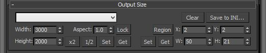

New features of this release:
- Region render parameter can be specified for each camera
- Set Viewport button sets viewport camera and resolution and aspect as well
- It is possible now to specify backburner servers and server groups for silent rendering submit
Download
Since this version is not tested thoroughly I put download link here - batchcamerarender_1.9.15.ms
Region render parameters

By using these parameters you can specify different regions for each camera in the scene. Get/Set buttons are used to get/set region settings of the current viewport. Values are set as follows: X/Y coordinates of upper left corner and Width/Height of the region rectangle. To keep values resolution independent they are set in percents not pixels. To enable/disable region rendering use Region swatch button.
Backburner servers
Ok, to use this feature you will need to edit the code. Sorry for that, but adding UI elements requires so much work, I would not be able to make it for weeks. So, here it is, at line 972 we have this:
local render_servers = #()
-- render_servers = batchManager.GetServers filter:#group key:"test_global"
-- render_servers = batchManager.GetServers filter:#index key:2
render_servers = batchManager.GetServers()
local servernames = for i in render_servers collect i.name
format "servernames:%\n" servernames
batchJob.Submit Servers:render_servers
-- batchJob.Submit Servers:#(render_servers[1])
render_servers array contains servers and it is passed to batchJob.Submit method. In current state array contains all the servers since line 975 collects all of them. If you need to select group of servers you need to:
- Uncomment line 973 and comment 975
- Specify group name in the end of line 973
- Remember to save and run the script using
Ctrl+Ein maxscript editor to update the script in 3ds max.
After that all your silent network rendering jobs will be assigned to that server groups. Also remember that only global groups are supported.
To use one or more particular servers you will need to get their indexes in render_servers array. To get that information first make sure script is configured to use all the servers (use fragment above as a guide) then submit any render job and check maxscript listener - there should be the list of all your servers' names. Note the index of needed servers in that list.
- Uncomment line 979 and comment line 978
- List the servers using your indexes and array just like this:
#(render_servers[1], render_servers[2], render_servers[3]). I used 1, 2, 3 here as indexes.
That's it. Run the script using Ctrl+E and then run it in regular way, using toolbar button.
I hope this little guide helps you to customize your script.
This site is still under develepment so, please, go ahead and comment on ScriptSpot.com. Some more +-s on Scriptspot are much appreciated!